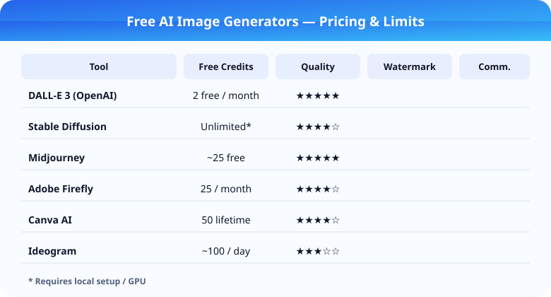

Top 10 Free AI Image Generators Reviewed
Free AI image generators are appealing because they lower the barrier to experimentation. You can test styles, prompt ideas, and creative directions without buying a monthly plan first. The catch is that "free" covers a wide range of experiences. Some tools give generous daily credits. Others provide a usable trial but reserve export quality, watermark removal, or commercial rights for paid plans.
If you are trying to build a real shortlist, you should compare more than image quality. A good free tool is one that teaches you whether the platform fits your workflow before it asks for money. That means clear limits, predictable output, and enough room to evaluate prompt control without feeling trapped in a paywall funnel after three generations.
| Tool | Free Tier | Paid Plan | Best For |
|---|---|---|---|
| DALL-E 3 | 2 free/month via ChatGPT | $20/month ChatGPT Plus | Quality & accuracy |
| Stable Diffusion | Free (local/cloud) | $0 (open-source) | Full control & privacy |
| Midjourney | No free tier | $10-60/month | Artistic & photorealistic |
| Adobe Firefly | 25 free credits/month | $4.99/month | Commercial use |

Key Takeaways
- DALL-E 3 offers the best quality but only 2 free images per month
- Stable Diffusion is the best value if you have local GPU or don't mind cloud setups
- Adobe Firefly is the safest choice for commercial use with 25 free monthly credits
- Always verify commercial licensing terms before publishing generated images publicly
| Tool | Free Tier | Limitations | Best For |
|---|---|---|---|
| DALL-E 3 | ✓ (ChatGPT Free) | Limited generations | Quality & prompt accuracy |
| Stable Diffusion | ✓ (local) | Requires GPU | Full control & privacy |
| Leonardo.ai | ✓ (coins) | 150 coins/day | Game assets & concept art |
| Canva | ✓ (limited) | 50 AI generations | Design + AI images |
| Bing Image Creator | ✓ (boosts) | 15 boosts | Quick casual use |
What "free" really means in this category
The biggest misunderstanding around free AI image tools is assuming that no-cost access automatically equals good value. A free plan can still be poor if the queue is slow, the resolution is too low for real use, or the outputs are inconsistent enough that each result needs multiple retries. Likewise, a modest free tier can still be excellent if it gives you enough depth to assess style control, prompt adherence, and reliability.
When reviewing these tools, we focus on five factors: how easy it is to start, how well the tool follows prompts, whether image quality is usable beyond novelty, what restrictions exist around watermarking or credit systems, and whether commercial usage is clear. Many users can forgive a smaller free allowance. They should not have to guess what they are allowed to do with the output.
Top picks from the free AI image generator field
Best overall free starting point
The best overall free option is usually the one that balances ease of use with enough output quality to inform a real purchase decision. These tools tend to have intuitive prompt interfaces, decent generation speed, and a free tier that is limited but not artificially broken. If a platform can help you create several solid images across different styles in one session, it is doing its job.
Best for photorealistic output
Some free tools excel at dramatic, polished, photorealistic images. They are especially useful for concept exploration, marketing mockups, or content thumbnails. Their weakness is often consistency. You may get a strong first image but struggle to maintain the same subject identity or composition across a sequence.
Best for fast social visuals
For marketers and creators who need simple campaign images, thumbnails, or fast concept art, the best tools are not always the most technically sophisticated. The winning products are often the ones that reduce friction. If you can enter a prompt, choose a style, and get something usable in minutes, that matters more than having the deepest settings panel.
Best for experimental or artistic styles
Free image generators also vary widely in artistic range. Some are optimized for clean commercial visuals, while others are better for stylized compositions, surreal concepts, or painterly output. Artists and creative teams should test multiple prompts in the same theme to see which engine produces the most coherent aesthetic rather than the most random spectacle.
Best for beginners, creators, and marketers
Beginners should prioritize tools that reduce complexity without hiding too much control. A good beginner-friendly interface offers smart defaults, style presets, and a clear path from prompt to download. If the tool forces new users to learn model parameters or unclear credit rules before they have generated anything useful, it is failing the onboarding test.
Creators who work with YouTube thumbnails, blog visuals, social posts, or lightweight brand assets often need different strengths than hobbyists. They need dependable compositions, readable focal points, and a smoother route to resizing or reusing outputs. A generator that makes beautiful but chaotic images may be fun, but it will not necessarily help a content workflow.
Marketers should also evaluate how hard it is to produce images that feel on-brief rather than just eye-catching. Prompt adherence matters more in business use because the image is usually supporting a message, campaign, or product. If the system cannot keep the prompt grounded, free access will not save enough time to matter.
Commercial use, watermark rules, and hidden limits
Commercial usage rights are one of the most overlooked parts of the decision. Some tools allow commercial use on free plans, others restrict it, and some leave the language vague enough that cautious businesses will avoid using the outputs altogether. Before adopting any free generator for public-facing assets, review the licensing terms carefully and keep copies of the policy version in effect at the time you used the image.
Watermarks, queue priority, and export limits can also affect the true value of a free plan. A free generator may produce good images, but if every asset is watermarked or exported at low resolution, its business usefulness declines sharply. The right way to compare tools is not "Can it generate something pretty?" but "Can it generate something usable under the actual rules of the free plan?"
Users should also watch for the psychological design of upgrade prompts. Some platforms interrupt the creative flow so often that the free tier feels more like a sales funnel than an evaluation environment. Others keep the upsell visible but secondary, which makes them much easier to trust.
Bottom line
The best free AI image generator is the one that helps you judge fit honestly before you subscribe. That means solid prompt adherence, a transparent free allowance, and clear rules around commercial usage. For casual experimentation, many tools are good enough. For creators, marketers, and small businesses, the stronger products are the ones that combine usable output with low-friction testing.
If you are serious about choosing a platform, run the same three prompts across several tools: one realistic prompt, one product or marketing prompt, and one stylized creative prompt. Compare the consistency, speed, and usefulness of each result. That simple test will tell you far more than a feature table filled with marketing language.
Related Articles